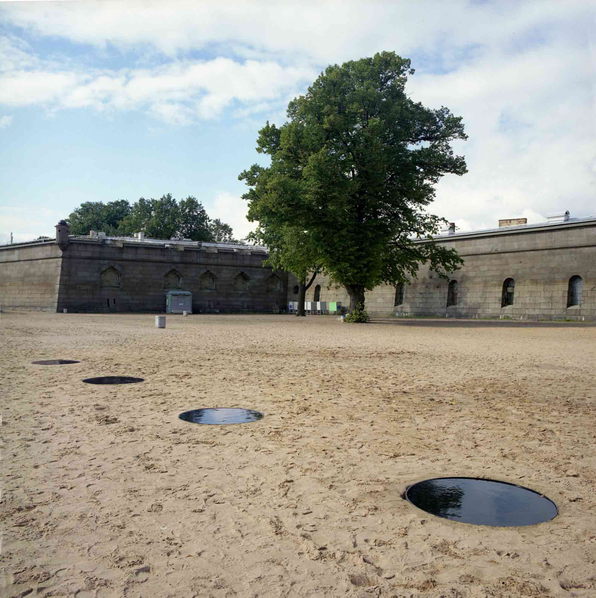
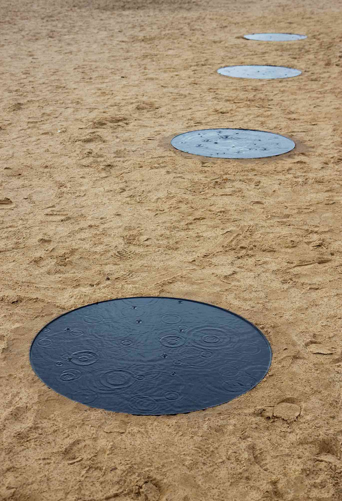
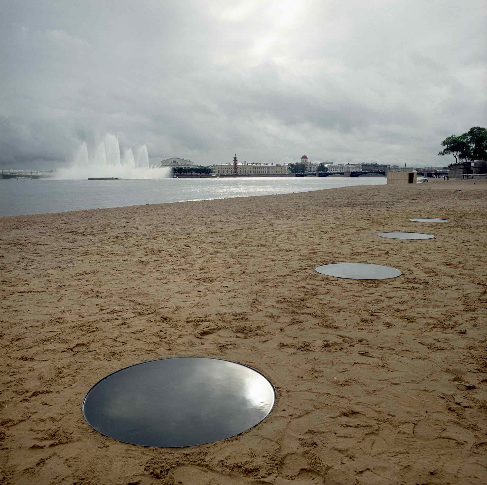
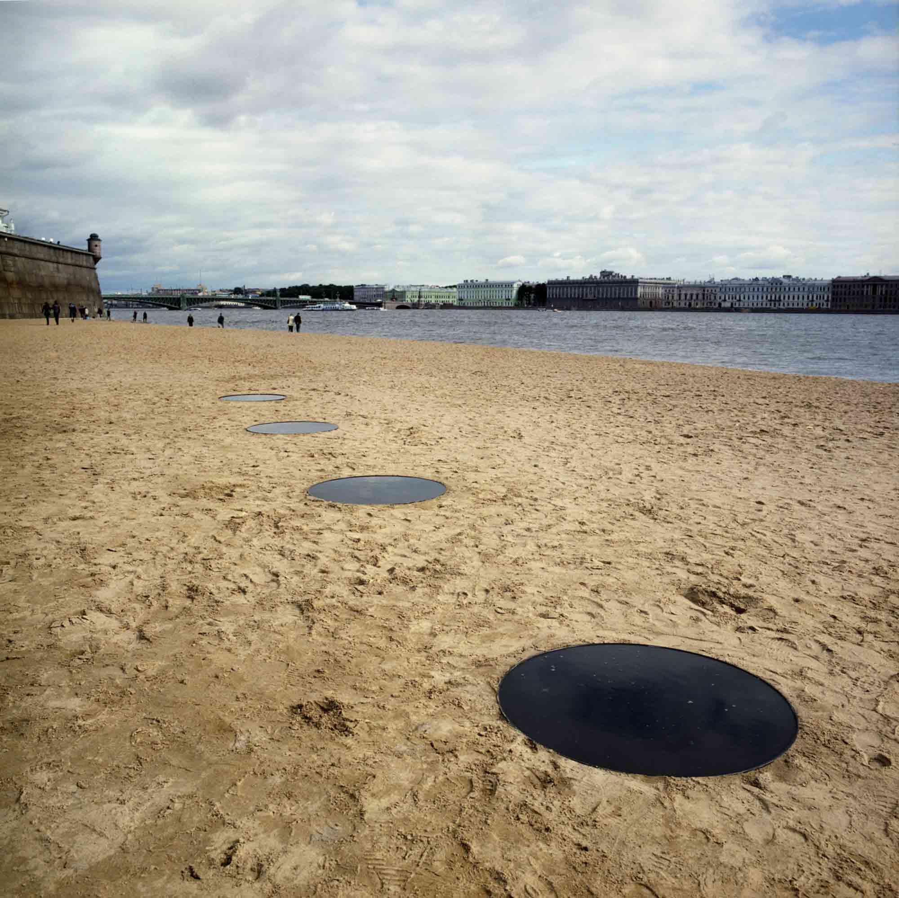
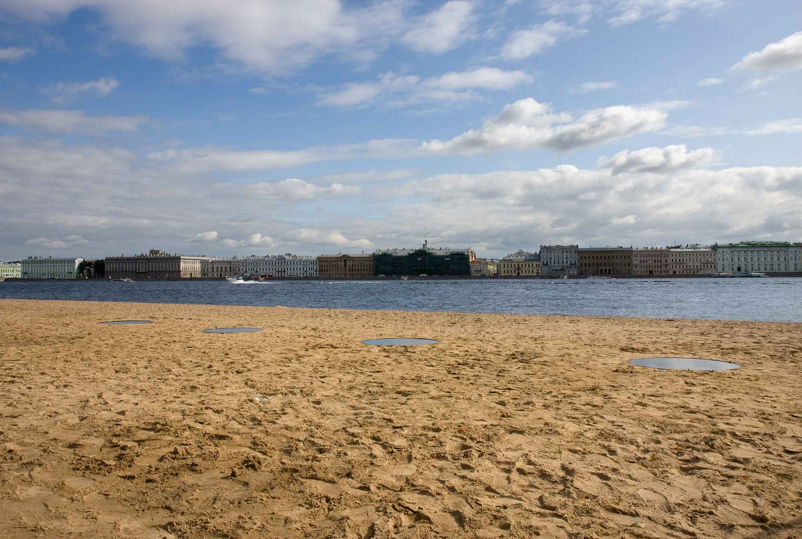
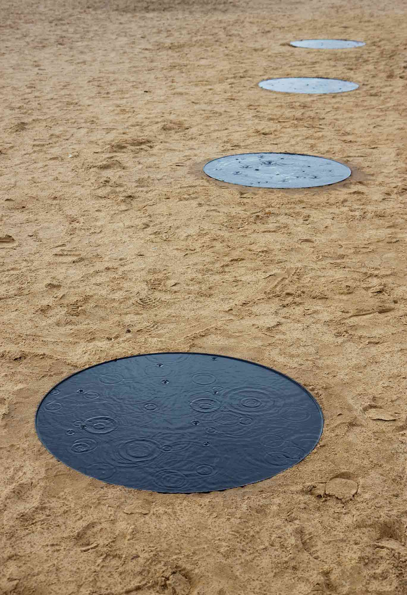
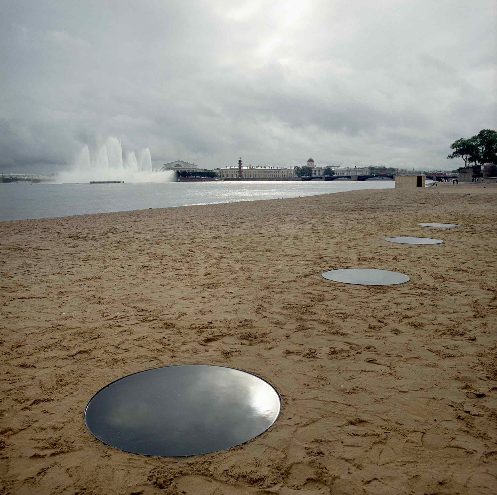
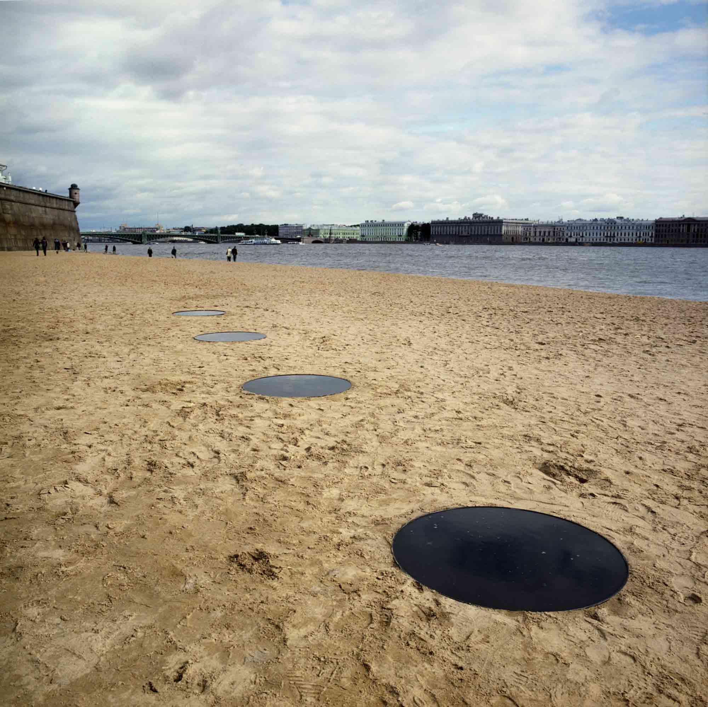
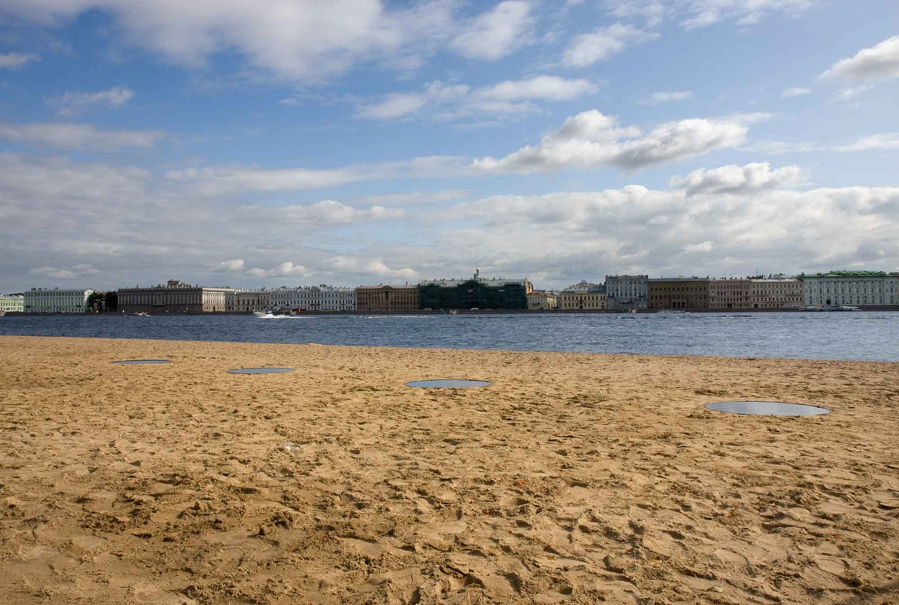

Supernatural
H2O Contemporary: H2O: Nordic and Russian Art in Public Spaces
2008
H2O Contemporary: H2O: Nordic and Russian Art in Public Spaces
2008
Curated by Anna Bitkina
Dimensions: 10m x 0,8m x 0,3m
H2O Contemporary was a Nordic-Russian group exhibition curated by Anna Bitkina taking place in the historical
area of the Peter and Paul
Fortress in St. Petersburg in August, 2008.
Supernatural consisted of four rounded water container ends made of steel and pained black. The ends were dug
into beach sand and filled up with black colored water.
The beach were Supernatural was situated was traditionally the place where the prisoners, before and after the
revolution and during the Word War II were executed during the sunrise.








